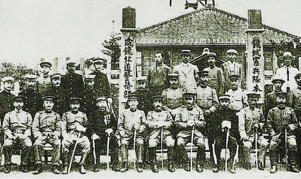
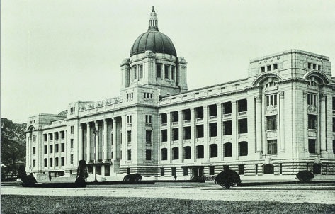
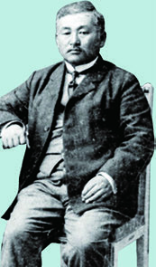
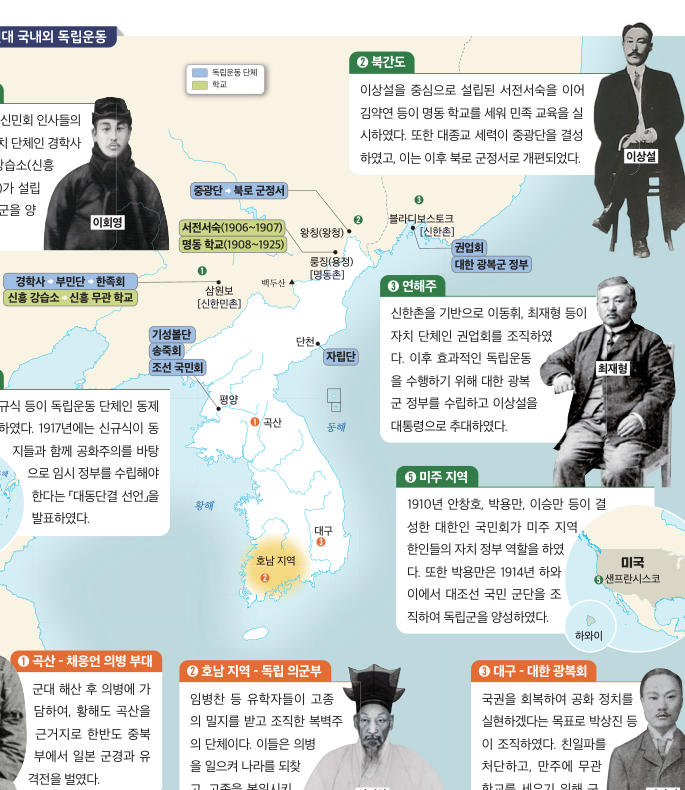
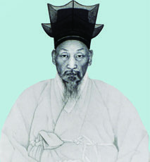

한국사Ⅱ 시대별 학습관
이 시기의 통치 방식에 대한 설명으로 옳은 것은?
- ① 보통 경찰 제도를 실시하여 통치를 완화하였다.
- ② 헌병 경찰을 앞세운 무단 통치를 실시하였다.
- ③ 회사령을 폐지하고 기업 활동을 전면 보장하였다.
- ④ 조선인의 참정권을 인정하여 지방 자치를 확대하였다.
- ⑤ 민족 자치론을 수용하여 조선 총독부를 폐지하였다.
자료에 해당하는 사업의 결과로 가장 적절한 것은?
- ① 농민에게 토지를 무상으로 분배하였다.
- ② 지세를 현물로만 납부하게 하였다.
- ③ 회사 설립을 허가제로 제한하였다.
- ④ 총독부가 토지 소유권을 확보하고 농민의 소작농화가 심해졌다.
- ⑤ 농촌 진흥 운동으로 자작농이 크게 증가하였다.
1919년 3월 1일 독립 선언서의 핵심 문구를 재구성한 자료
자료와 관련된 운동의 영향으로 옳은 것은?
- ① 대한민국 임시 정부가 상하이에 수립되었다.
- ② 조선 총독부가 즉시 해체되었다.
- ③ 한일 의정서가 체결되었다.
- ④ 조선어 학회가 해산되었다.
- ⑤ 미군정이 남한에 수립되었다.
자료에 나타난 통치 방식은?
- ① 무단 통치
- ② 문화 통치
- ③ 민족 말살 통치
- ④ 통감부 통치
- ⑤ 군정 통치
자료의 정책으로 옳은 것은?
- ① 산미 증식 계획
- ② 토지 조사 사업
- ③ 농촌 진흥 운동
- ④ 남면북양 정책
- ⑤ 회사령
B: “민족 차별 교육에 맞서 학생들이 동맹 휴학과 시위를 벌였다.”
A와 B에 해당하는 민족 운동을 바르게 연결한 것은?
- ① A 물산 장려 운동 / B 광주 학생 항일 운동
- ② A 형평 운동 / B 원산 총파업
- ③ A 농촌 계몽 운동 / B 6·10 만세 운동
- ④ A 민립 대학 설립 운동 / B 봉오동 전투
- ⑤ A 국채 보상 운동 / B 의열단 활동
자료의 단체에 대한 설명으로 옳은 것은?
- ① 무장 독립군만으로 구성되었다.
- ② 민족 유일당 운동의 성과로 결성된 신간회이다.
- ③ 광복 직후 좌우 합작을 위해 결성되었다.
- ④ 만주에서 한국광복군을 지휘하였다.
- ⑤ 조선 총독부의 자문 기구였다.
자료의 단체와 가장 관련 깊은 인물은?
- ① 김구
- ② 신채호
- ③ 안창호
- ④ 박은식
- ⑤ 이승만
자료에 대한 설명으로 옳은 것은?
- ① 임시 정부는 국내에서만 활동하였다.
- ② 임시 정부는 3·1 운동 이후 수립되었다.
- ③ 임시 정부는 조선 총독부의 승인을 받아 운영되었다.
- ④ 임시 정부는 일본의 중일 전쟁 선포 뒤 처음 만들어졌다.
- ⑤ 임시 정부는 해방 후 미군정의 행정 기구가 되었다.
독립군의 주요 전투 지역과 이동 경로를 나타낸 개념도
자료의 전투를 순서대로 바르게 나열한 것은?
- ① 청산리 전투 → 봉오동 전투
- ② 봉오동 전투 → 청산리 대첩
- ③ 쌍성보 전투 → 대전자령 전투
- ④ 대전자령 전투 → 청산리 대첩
- ⑤ 봉오동 전투 → 한국광복군 창설
자료에 나타난 정책의 공통된 목적은?
- ① 조선인의 경제적 자립 지원
- ② 조선인의 민족 정체성 말살과 전쟁 동원
- ③ 조선인의 참정권 확대
- ④ 조선인의 토지 소유권 보장
- ⑤ 조선인의 국제 교류 촉진
이 정책이 본격화된 시기의 국제 정세로 옳은 것은?
- ① 러일 전쟁 직후
- ② 제1차 세계 대전 직후
- ③ 중일 전쟁과 태평양 전쟁이 이어지던 시기
- ④ 냉전이 끝난 이후
- ⑤ 한국 전쟁 휴전 이후
자료의 부대에 대한 설명으로 옳은 것은?
- ① 의열단이 개편된 조선 혁명군이다.
- ② 만주에서 활동한 동북 항일 연군이다.
- ③ 대한민국 임시 정부의 한국광복군이다.
- ④ 국내에서 조직된 조선 의용대이다.
- ⑤ 해방 후 창설된 국군이다.
실제 사진을 대신한 학습용 재구성 이미지이며, 회담의 핵심 발언을 판단하는 자료
자료의 두 내용이 포함된 국제 회의와 가장 관련 깊은 것은?
- ① 카이로 회담
- ② 얄타 회담
- ③ 포츠담 회담
- ④ 워싱턴 회의
- ⑤ 베르사유 회의
광복 직후 남한에 설치된 군정으로 옳은 것은?
- ① 소련군정
- ② 미군정
- ③ 조선 총독부
- ④ 대한민국 정부
- ⑤ 고려 민주 연방 정부
자료의 조직은?
- ① 조선 건국 동맹
- ② 조선 건국 준비 위원회
- ③ 한국 민주당
- ④ 반민족 행위 특별 조사 위원회
- ⑤ 남조선 노동당
자료에 대한 설명으로 옳은 것은?
- ① 회의 직후 남북한 총선거가 실시되었다.
- ② 신탁 통치 문제를 둘러싸고 국내에서 격렬한 논쟁이 일어났다.
- ③ 이 결정으로 대한민국 정부가 즉시 수립되었다.
- ④ 일본의 식민 통치를 합법화하였다.
- ⑤ 유엔 한국 임시 위원단을 파견하였다.
자료에 해당하는 운동은?
- ① 물산 장려 운동
- ② 좌우 합작 운동
- ③ 민립 대학 설립 운동
- ④ 국채 보상 운동
- ⑤ 농촌 계몽 운동
자료 이후의 사실로 옳은 것은?
- ① 1948년 5월 10일 남한 총선거가 실시되었다.
- ② 1945년 8월 15일 대한민국 정부가 수립되었다.
- ③ 1950년 6월 25일 유엔 총회가 개최되었다.
- ④ 1919년 3월 1일 제헌 국회가 구성되었다.
- ⑤ 1946년 모스크바 3국 외상 회의가 개최되었다.
1945~1948년 주요 사건의 흐름을 나타낸 연표
올바른 순서는?
- ① ㄹ-ㄷ-ㅁ-ㄴ-ㄱ
- ② ㄷ-ㄹ-ㅁ-ㄴ-ㄱ
- ③ ㄹ-ㅁ-ㄷ-ㄴ-ㄱ
- ④ ㄹ-ㄷ-ㄴ-ㅁ-ㄱ
- ⑤ ㄷ-ㅁ-ㄹ-ㄴ-ㄱ

이 이미지가 상징하는 일제의 통치 방식에 대한 설명으로 옳은 것은?
- ① 조선인의 자치권을 확대하였다.
- ② 조선 총독이 입법·행정·사법의 권한을 행사하였다.
- ③ 조선인의 참정권을 보장하였다.
- ④ 민족 대표가 총독부의 정책을 결정하였다.
- ⑤ 지방 의회가 식민 통치를 대신하였다.

이와 같은 근대식 건물이 식민지 시기에 세워진 배경에 대한 설명으로 가장 적절한 것은?
- ① 식민 통치와 경제 수탈을 위한 행정·금융 기관을 설치하였다.
- ② 조선인의 자치 정부 청사로만 사용하였다.
- ③ 농민에게 토지를 나누어 주기 위한 기관이었다.
- ④ 독립운동가들이 비밀리에 세운 학교였다.
- ⑤ 해방 이후에 처음 건립된 국회 의사당이었다.

이러한 인물 사진 자료를 통해 확인할 수 있는 한국 독립운동의 특징으로 옳은 것은?
- ① 다양한 인물과 단체가 국내외에서 독립운동을 전개하였다.
- ② 모든 독립운동은 한 인물이 단독으로 주도하였다.
- ③ 독립운동은 광복 이후에 처음 시작되었다.
- ④ 독립운동은 일본 정부의 공식 지원을 받았다.
- ⑤ 독립운동은 정치 활동 없이 문화 활동만을 의미하였다.

지도에 나타난 1910년대 국내외 독립운동에 대한 설명으로 옳은 것은?
- ① 일본의 식민 통치에 협력하는 친일 단체가 각 지역에 조직되었다.
- ② 독립운동가들은 국내 활동만 고집하고 국외로 근거지를 옮기지 않았다.
- ③ 모든 독립운동 단체가 하나의 통일된 지휘 체계 아래 움직였다.
- ④ 만주·연해주 등지에 독립운동 기지를 세우고 독립 전쟁을 준비하였다.
- ⑤ 1940년대에 처음으로 국외 독립운동 기지가 건설되었다.

사진의 인물인 임병찬의 활동으로 옳은 것은?
- ① 신간회를 조직하여 민족 협동 전선을 구축하였다.
- ② 의열단을 조직하여 식민 통치 기관을 공격하였다.
- ③ 독립의군부를 조직하고 국권 반환 운동을 추진하였다.
- ④ 한국광복군을 창설하여 연합국과 공동 작전을 전개하였다.
- ⑤ 조선어 학회를 이끌며 우리말 사전을 편찬하였다.
자료에 해당하는 사업은?
- ① 토지 조사 사업
- ② 산미 증식 계획
- ③ 농촌 진흥 운동
- ④ 회사령 폐지
- ⑤ 국가 총동원법
자료에 해당하는 운동은?
- ① 6·10 만세 운동
- ② 광주 학생 항일 운동
- ③ 형평 운동
- ④ 물산 장려 운동
- ⑤ 국채 보상 운동
자료와 관련된 임시 정부의 활동으로 옳은 것은?
- ① 연통제와 교통국을 운영하였다.
- ② 조선 총독부의 기관지를 발행하였다.
- ③ 일본의 회사 설립을 허가하였다.
- ④ 신사 참배를 장려하였다.
- ⑤ 미군정의 행정 명령을 집행하였다.
자료와 관련된 역사적 상황으로 옳은 것은?
- ① 모스크바 3국 외상 회의 결정의 이행을 둘러싼 갈등이었다.
- ② 3·1 운동 직후 상하이에 임시 정부가 세워졌다.
- ③ 일본이 조선을 병합하기 전에 발생한 사건이었다.
- ④ 5·10 총선거 이후에 처음 개최되었다.
- ⑤ 한국 전쟁 휴전 협정의 결과로 열렸다.
자료에 해당하는 정부의 성격으로 옳은 것은?
- ① 대한민국 임시 정부의 망명 정부였다.
- ② 유엔의 결의와 감독 아래 수립된 대한민국 정부였다.
- ③ 조선 총독부를 계승한 식민지 정부였다.
- ④ 미군정이 해산하지 않고 그대로 전환된 정부였다.
- ⑤ 남북한 공동 선거로 수립된 단일 정부였다.